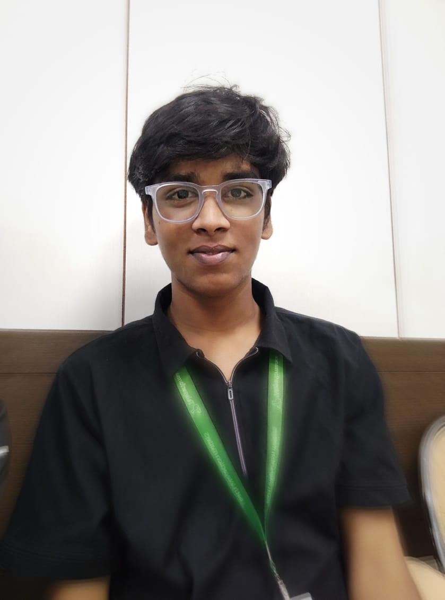

Yuvraj Singh

Summary
I am a hardworking and dedicated individual with experience in DATA STRUCTURES AND ALGO and Full Stack WEBD.
Education
Bachelor of Technology, Computer Science and Engineering - GLA University (2022-Present)
Work Experience Or Workshops
AWS Workshop Participant -Technical Guftgu
June 10,2024- July 30,2024
- Gained hands-on experience with core AWS services, including EC2, S3, and RDS.
- Deployed a sample web application using AWS infrastructure.
- Engaged in collaborative group projects, enhancing teamwork and communication skills.
Full-Stack Workshop Participant - Integraminds
August 1, 2024 - September 10, 2024
- Developed web applications using HTML, CSS, JavaScript.
- Gained experience in backend development, including RESTful API creation and database integration with MongoDB.
- Collaborated in team projects to design, build, and deploy full-stack applications.
Skills
- Object-Oriented Programming:⭐️⭐️⭐️⭐️⭐️
-
Data Structures & Algo:⭐️⭐️⭐️⭐️
-
Full-Stack WebD:⭐️⭐️⭐️⭐️⭐️
Certifications
- Complition of Cloud computing Workshop
- Complition of Full-Stack WebD Workshop
- Complition of R-lang basic workshop
Other